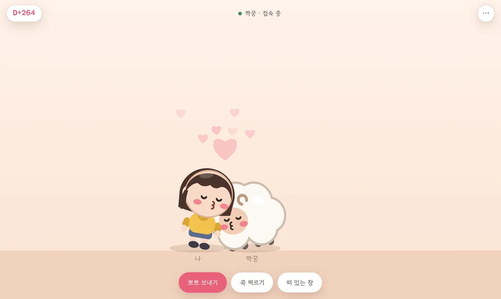
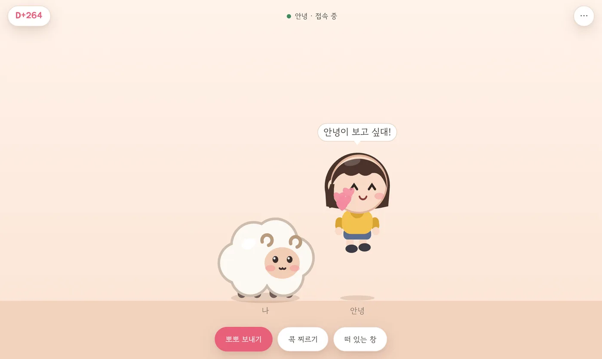
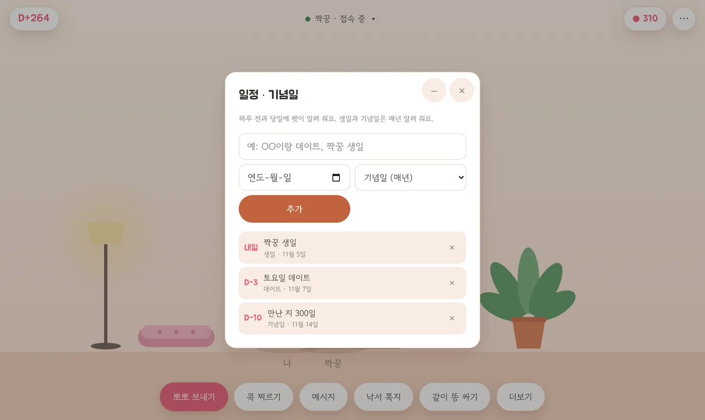
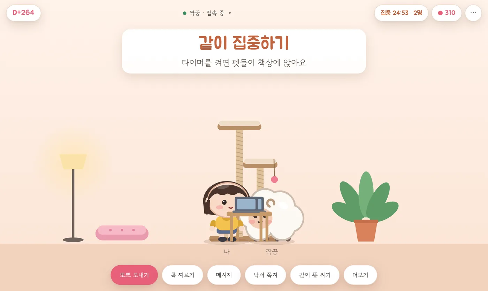
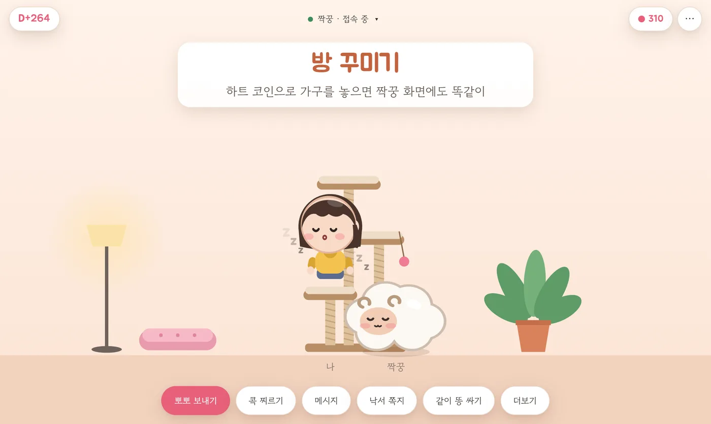
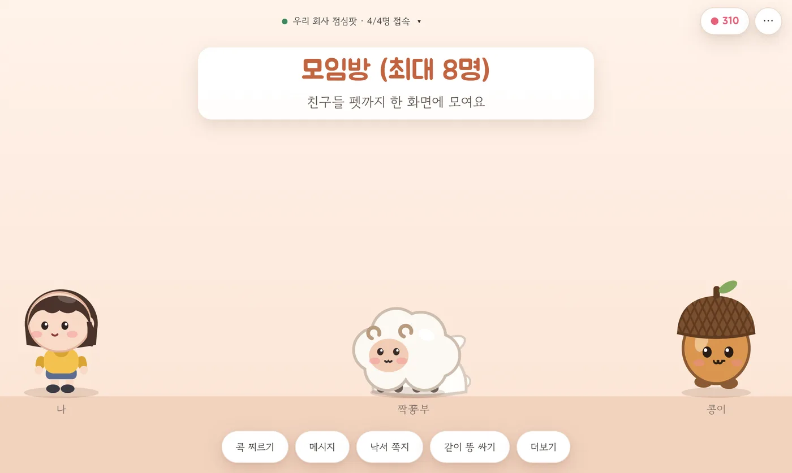

짝꿍이랑 같이 키우는
바탕화면 펫
내 펫과 짝꿍 펫이 화면 아래를 같이 돌아다녀요. 내가 뽀뽀를 보내면 짝꿍 화면에서도 똑같이 쪽.
무료 · Windows 10/11 · macOS · iPad · iPhone · 웹 브라우저

멀리 있어도 같이 놀아요
- 콕 찌르기: 짝꿍 화면에 "보고 싶대!" 말풍선이 떠요
- 메시지 · 낙서 쪽지: 짝꿍 펫이 들고 가서 전해 줘요
- 같이 똥 싸기: 하나가 싸면 다른 하나도 따라 해요
- 던지기: 펫을 집어서 휙. 양쪽 화면에서 같이 날아가요

우리 둘 일정도 펫이 챙겨요
처음 만난 날을 넣으면 둘 다 같은 D+숫자가 보여요. 데이트나 생일을 적어 두면 하루 전이랑 당일에 펫이 말해 줘요.
할 일이랑 데이트 버킷리스트도 같이 써요. 누가 체크하면 펫들이 축하해 줘요.

같이 집중하기
15분, 25분, 50분 중에 골라 타이머를 켜면 펫들이 책상에 앉아요. 짝꿍이 "나도 같이"를 누르면 둘이 같이 공부하는 셈이에요.

방 꾸미기
매일 켜면 하트 코인이 모여요. 코인으로 캣타워, 쿠션, 화분 같은 가구를 사서 놓으면 짝꿍 화면에도 똑같이 생기고, 펫들이 올라가서 놀아요.

친구들이랑 모임방
모임 코드를 나눠 가지면 최대 8명의 펫이 한 화면에 모여요. 점심 투표, 단체 메시지, 다 같이 똥 싸기도 돼요.

시작하는 법
- 한 사람이 앱이나 웹을 열고 짝 코드를 만들어요.
- 짝꿍이 그 코드를 입력하면 연결 끝.
- 이제 서로의 화면에 서로의 펫이 놀러 와요.